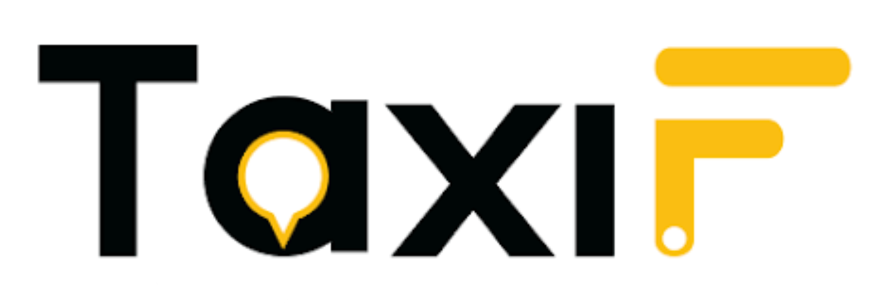
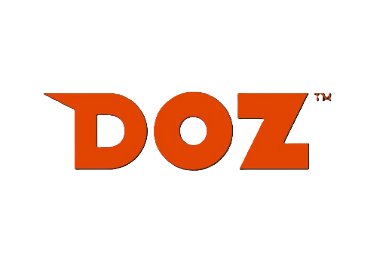

Technology Core
Shared infrastructure with customizable solutions for each subsidiary's specific needs.
Shared infrastructure with customizable solutions for each subsidiary's specific needs.
Independent decision-making with group-level support and oversight.
Joint ventures, technology integrations, and market expansion initiatives.
Regular audits, license management, and compliance training programs.


Managed by TaxiF, DOZ Mobility, and LOOP.
Operated by Express with support from DOZ Fleet.
Provided by DOZ Brain for group-wide intelligence.
Provided by DOZ Pay infrastructure.
Smart city initiatives and compliance.
Enhancing operational efficiency for partners.
Integrating AI and advanced tech.
Our Vision